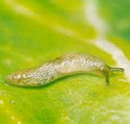

Meztelen csigák
Limacidae
Zöldségnövényeinken több faj (pl. a kerti, a földi
nagy meztelen csiga) okozhat jelentős károkat. Fejlődésük egyéves - éjszaka
táplálkoznak. A sűrű állományok, nedvesség kedvező életteret jelent számukra.
Jellegzetes csillogó nyálkacsík árulkodik jelenlétükről. Kárképük hámozgatás,
szabálytalan lyuk, amelyet reszselőszerű, fogazott nyelvükkel okoznak. A
táplálékban alig válogatnak - a káposztafélék, paradicsom, borsó,
gyökérzöldségek egyaránt szerepelnek étlapjukon. A levelek, termések, sőt a húsos
gyökerek (gyökérzöldségek), gumók és hagymák megrágása nyomán mennyiségi és
minőségi kár jelentkezik, a csíranövények kipusztulnak, a sebeken különböző
gombák és baktériumok telepszenek meg - és ezek folytatják a kártételt.
Védekezés:
- Sűrű állományok kerülése, gyomok írtása.
- Öntözést úgy ütemezni, hogy estig felszáradjon.
- Pohárcsapdázás sörrel; ezt úgy hajtjuk végre, hogy üvegbe vagy pohárba
2 ujjnyi sört öntünk, s az edényt a talaj színéig lesüllyesztjük.
- Mesterséges nedves búvóhelyen (pl. rongy) megsemmisítés.
- Száraz talajra 20-30 g/m2 porított szuperfoszfát vagy égetett mészpor (vízelvonó
anyagok) kiszórása.
- Metaldehid 5 G 2 g/m2 szórása a talajra, vegyszer a növényre ne kerüljön.